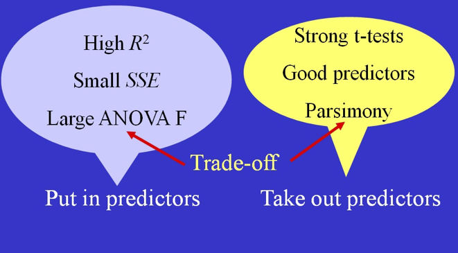

Chapter 3: Multiple Regression
Part 1: Sections 3.1-3.2
Statistical Modeling
Topics üìå
Multiple regression
Model
Prediction equation
Standard error of the residuals
Correlation matrix
Inference in Multiple Regression
Partitioning Variability
Adjusted \(R^2\)
Multiple Regression for Confidence and Prediction Intervals
Simple Linear Regression Model Review
\[ \begin{gather} Y = \beta_0 + \beta _1 X + \epsilon \\[2ex] \mbox{where } \epsilon \overset{\text{iid}}{\sim} N(0, \sigma_\epsilon) \end{gather} \]
Question: What if we have more than one predictor?
Example: Multiple Predictors using NFL Standings Data
- Response variable: \(Y=\text{WinPct}\)
- Predictors:
- \(X_1=\text{PointsFor}\)
- \(X_2=\text{PointsAgainst}\)
NFL Example: Data Plots Plotly Code
NFL Example: More Scatterplots
NFL Example: More Scatterplots

Multiple Regression Model
\[ \begin{gather} Y = \beta_0 + \beta _1 X_1 + \beta_2 X_2 + \cdots + \beta_k X_k+ \epsilon \\[2ex] \mbox{where } \epsilon \overset{\text{iid}}{\sim} N(0, \sigma_\epsilon) \end{gather} \]
Data
A dataframe with \(n\) rows
Quantitative response variable \(Y\)
\(k<1\) Predictors \(X_1, X_2, \ldots, X_k\)
Multiple Regression: The 4-Step Process
- Choose a form of the model
- Select predictors
- Determine appropriate functions of predictors
- Fit the model
- Estimate coefficients \(\hat\beta_0, \hat\beta_1, \ldots, \hat\beta_k\)
- Estimate standard error of the residuals \(\hat\sigma_\epsilon\)
- Assess the fit
- Check residual plots
- Test the overall fit using ANOVA, \(R^2\), and \(R^2_{\text{adj}}\)
- Test individual predictors using \(t\)-tests
- Use
- Obtain predictions \(\hat Y\)
- Compute prediction intervals and confidence intervals
NFL Example: Scatterplot with Fitted Regression Model
mod1 <- lm(WinPct ~ PointsFor + PointsAgainst, data = NFLStandings2016)
s3d <- with(NFLStandings2016,
scatterplot3d(PointsFor, PointsAgainst, WinPct, type = "h", color = "blue", pch = 16, angle = 50, main = "3d Scatterplot",xlim = c(250, 550), ylim = c(250,500))
)
s3d$plane3d(mod1, lty.box = "solid")
Fitted Prediction Equation
Call:
lm(formula = WinPct ~ PointsFor + PointsAgainst, data = NFLStandings2016)
Coefficients:
(Intercept) PointsFor PointsAgainst
78.5370 0.1699 -0.2482 \[ \widehat{\text{WinPct}} = 78.54 + 0.1699\text{ PointsFor} -0.2482\text{ PointsAgainst} \]
NFL Example: Regression Summary Output
Call:
lm(formula = WinPct ~ PointsFor + PointsAgainst, data = NFLStandings2016)
Residuals:
Min 1Q Median 3Q Max
-14.9898 -7.3482 -0.6821 7.2569 21.3189
Coefficients:
Estimate Std. Error t value Pr(>|t|)
(Intercept) 78.53698 15.37422 5.108 1.88e-05 ***
PointsFor 0.16992 0.02628 6.466 4.48e-07 ***
PointsAgainst -0.24816 0.03204 -7.744 1.54e-08 ***
---
Signif. codes: 0 '***' 0.001 '**' 0.01 '*' 0.05 '.' 0.1 ' ' 1
Residual standard error: 9.653 on 29 degrees of freedom
Multiple R-squared: 0.7824, Adjusted R-squared: 0.7674
F-statistic: 52.13 on 2 and 29 DF, p-value: 2.495e-10T-tests for Slopes
- Multiple “slopes” to test (each coefficient)
Hypotheses \[ \begin{align} H_0:&\beta_i=0 \\ H_a:&\beta_i\neq 0 \\ \end{align} \]
Test statistic \[t=\frac{\hat\beta_i}{\mbox{SE}_{\hat\beta_i}}\sim t_{n-k-1}\]
Confidence Intervals for Slopes
A confidence interval for the true value of any multiple regression coefficient, \(\beta_i\) has the form \[\hat\beta_i\pm t^* \cdot\text{SE}_{\hat\beta_i}\]
\(t^*\) is the critical value from the \(t\)-distribution with \(n-k-1\) degrees of freedom.
\(\text{SE}_{\hat\beta_i}\) is otained from R output.
Confidence intervals can again be obtained directly using the
confint()function in R.
Standard Error of the Multiple Regression Model
Recall condition: \(\epsilon\sim N(0, \sigma_\epsilon)\)
Estimate standard error:
\[ \hat\sigma_\epsilon = \sqrt{\text{MSE}}= \sqrt{\frac{\text{SSE}}{n-k-1}} \]
- Note that degrees of freedom depend on number of predictors.
NFL Example: ANOVA Output
Analysis of Variance Table
Response: WinPct
Df Sum Sq Mean Sq F value Pr(>F)
PointsFor 1 4126.2 4126.2 44.280 2.692e-07 ***
PointsAgainst 1 5588.4 5588.4 59.972 1.537e-08 ***
Residuals 29 2702.3 93.2
---
Signif. codes: 0 '***' 0.001 '**' 0.01 '*' 0.05 '.' 0.1 ' ' 1t-test for Correlation versus t-test for Slope
- \(t\)-test for slope \(H_0:\beta_i=0\):
- Assesses the linear association after accounting for the other predictors in the model.
- Assesses the linear association after accounting for the other predictors in the model.
- \(t\)-test for correlation \(\rho =0\):
- Assesses the linear association between two variables by themselves.
Important: These two tests are not equivalent in multiple regression.
Pearson's product-moment correlation
data: WinPct and PointsFor
t = 3.864, df = 30, p-value = 0.0005541
alternative hypothesis: true correlation is not equal to 0
95 percent confidence interval:
0.2850621 0.7703124
sample estimates:
cor
0.5764566 ANOVA Test for Overall Variability
- Test the following hypotheses
\[ \begin{align} H_0&:\beta_1=\beta_2=\cdots=\beta_k=0\\[1ex] H_a&: \text{At least one } \beta_i\neq 0 \end{align} \]
| Source | df | Sum of Squares |
Mean Square |
F | \(p\)-value |
|---|---|---|---|---|---|
| Model | \(k\) | \(SSModel\) | \(SSModel/k\) | \(MSModel/MSE\) | \(F_{k,n-k-1}\) |
| Residuals | \(n-k-1\) | \(SSE\) | \(MSE=SSE/(n-k-1)\) | ||
| Total | \(n-1\) | \(SSTotal\) |
- Test using \(F=\text{MSModel}/\text{MSE}\) with \(k\) and \(n-k-1\) degrees of freedom.
NFL Example: ANOVA Table
- Use
anova_alt.rto create theanova_alt()function.
mod1 <- lm(WinPct ~ PointsFor + PointsAgainst, data = NFLStandings2016)
# The file anova_alt.r must be in the same folder
source("anova_alt.r")
# Produces standard anova table
anova_alt(mod1)Analysis of Variance Table
Df SS MS F P
Source 2 9714.6 4857.3 52.126 2.4948e-10
Error 29 2702.3 93.2
Total 31 12416.9 400.5 Why do we call it \(R^2\)?
\[ R^2=\frac{\text{SSModel}}{\text{SSTotal}} \]
- For a simple linear model:
- \(R^2\) is the squared correlation coefficient \(R^2=r^2\).
- \(R^2\) is the squared correlation coefficient \(R^2=r^2\).
- For multiple regression:
- Each predictor \(X_i\) has a different correlation with \(Y\).
- \(R^2\) is correlation between the observed and predicted values: \[R^2=\text{corr}(y,\hat y)\]
Note: This interpretation is not needed for simple correlation but also holds there.
What makes a good multiple regression model?

Purposes and Approaches to Regression Modeling
Purposes
- Model and understand
- Predict
Competing goals
- Parsimony: construct a simple model
- Increase \(R^2\): construct a complex model
Tradeoffs
- Adding terms to a model:
- Increases SSModel
- Decreases SSE
- Increases \(R^2\)
- Increases SSModel
Practical question
- Is the increase in \(R^2\) worth the added complexity?
Adjusted \(R^2\) to the Rescue
- For simple regression we used:
\[ R^2 = \frac{SSModel}{SSTotal}=1-\frac{SSE}{SSTotal} \]
- An “adjusted” version is preferred for multiple regression:
\[R^2_{\text{adj }} = 1-\frac{SSE/(n-k-1)}{SSTotal/(n-1)}=1-\frac{\hat\sigma^2_{\epsilon}}{s^2_y}\]
The adjustment is a “penalty” for adding parameters to the model.
Can be used to compare models with different numbers of predictors.
NFL Regression Output Revisited
Call:
lm(formula = WinPct ~ PointsFor + PointsAgainst, data = NFLStandings2016)
Residuals:
Min 1Q Median 3Q Max
-14.9898 -7.3482 -0.6821 7.2569 21.3189
Coefficients:
Estimate Std. Error t value Pr(>|t|)
(Intercept) 78.53698 15.37422 5.108 1.88e-05 ***
PointsFor 0.16992 0.02628 6.466 4.48e-07 ***
PointsAgainst -0.24816 0.03204 -7.744 1.54e-08 ***
---
Signif. codes: 0 '***' 0.001 '**' 0.01 '*' 0.05 '.' 0.1 ' ' 1
Residual standard error: 9.653 on 29 degrees of freedom
Multiple R-squared: 0.7824, Adjusted R-squared: 0.7674
F-statistic: 52.13 on 2 and 29 DF, p-value: 2.495e-10Confidence Intervals and Prediction Intervals for Multiple Regression
- Obtain predictions by substituting \(x\) values of interest:
\[\hat y = \hat\beta_0 + \hat\beta_1 x_1^* + \cdots + \hat\beta_k x_k^*\]
As before, prediction intervals are much wider than confidence intervals
Use R to obtain confidence and prediction intervals
NFL Regression Prediction Examples
- Average (expected) winning percent for all teams with
PointsFor=350andPointsAgainst=300.